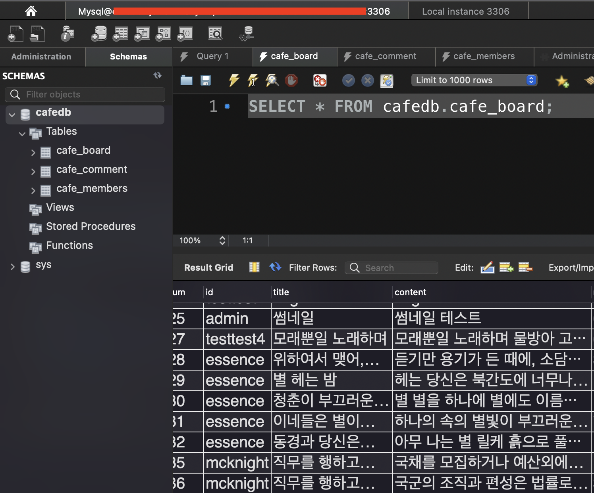

JAVA Servlet 프로젝트) Cafe(웹 사이트) 만들기 31 - AWS로 프로젝트 배포하기 2. RDS 연결
개발환경
- MacBook Air (M1, 2020)
- OpenJDK 8
- Eclipse 2021-12
- tomcat 8.5
- MySQL Workbench 8.0.19
기간
- 2022.3.4 ~ 2022.4.6
주제
- 웹 백엔드 수업 중 중간 과제로 개인 프로젝트를 진행하게 되었다.
- 회원가입/로그인/탈퇴 등 기본적인 회원관리 시스템을 가진 웹 사이트를 만드는 것이다. 주어진 기한은
한 달 - 나는
다음 카페를 소규모로 만들어 보기로 했다. 평소 자주 이용하기도 했고 과제의 평가 기준에서 요구하는 기능들을 다 담고 있기도 했기 때문에 이번 기회에 구현해 보면 그동안 배운 것들을 활용하기에 좋을 거 같았다. - 평가 기준에 사이트의 디자인 구현(HTML/CSS 등 프론트엔드)은 포함되지 않기 때문에 본인이 쓰고 싶은 HTML/CSS 템플릿을 구한 뒤 회원 관리 기능을 구현하면 된다.
진행상황
AWA RDS를 사용해서 어제 업로드 했던war파일과DB를 연동했다.- MySQL 데이터베이스 생성 및 연결
AWS웹사이트에 있는 공식 가이드를 따라서 만들었다.(프리티어 버전)- 처음에는 어제 만들었던
EC2에MySQL을 깔아야 하나 했는데 그럴 필요 없이 공식 가이드대로 하니까 내 로컬MySQL Workbench에서RDS의MySQL Workbench로 접속이 되었다. 완전 간편!
EC2에서 RDS에 접근할 수 있도록 보안그룹 설정
- https://m.blog.naver.com/scw0531/221440516899
- 이 글을 참고해서 새로 생성한
RDS의 인바운드 규칙을 설정했다. - 어제 만들었던
EC2의 보안그룹 ID를 새 인바운드 규칙으로 추가해 주었다.
DB 데이터 불러오기
- 프로젝트를 진행하며 만들었던 데이터가 있으니까 이 데이터들을 그대로 넘기기로 했다.
cafedb라는 이름으로 기본 데이터베이스만 하나 생성한 뒤 상단 메뉴의Server - Date Import에서 내 로컬 컴퓨터에 있는DB백업 파일을 선택한 뒤import시키니까 바로 들어갔다. 가상 PC에 백업 파일을 옮겨줄 필요도 없고 정말 편하네!

context.xml 수정
- 어제 배포했던 프로젝트의
DB연결 정보를 수정해 주었다. - 로컬호스트에서 테스트하던
url과계정정보로 작성되어 있었기 때문에RDS와 연결이 되지 않았기 때문이다. FileZilla로EC2에 접속해context.xml만 로컬로 다운받은 다음에 접속 정보를 수정해서 다시 업로드 했다.url은jdbc:mysql://엔드포인트 이름:3306/cafedbusername과password는RDS를 만들면서 설정했던 ID와 비밀번호로 설정했다.

내 프로젝트 사이트 접속해서 확인!

- 메인 페이지에서 최신글 3개를 보여주는 기능을 만들었는데 내 사이트에 접속하니까 로드가 잘 된다! 감격스러워…
- 첨부된 이미지가 있으면 썸네일도 보여주도록 했는데 썸네일도 잘 나온다.

- 게시글 작성도 잘 되고 게시글 첨부파일 다운로드도 잘 되고… 하 정말 감격스럽다! 😭
탄력적 IP 연결
- https://jiwontip.tistory.com/43
-
마지막으로 여기를 참고해서 탄력적 IP도 생성한 후 연결해 주었다.
- 이렇게
AWS배포도 끝! 정말 좋은 경험이었다.